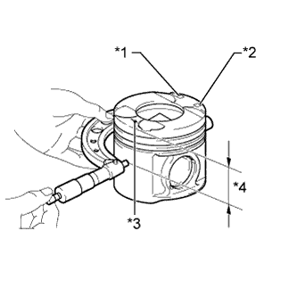

БЛОК ЦИЛИНДРОВ > РЕМОНТ |
| 1. ОТВЕРСТИЕ ЦИЛИНДРА |
Приготовьте 4 новых поршня ремонтного размера.
| Параметр / Устройство | Заданные условия |
| O/S 0,50 | 96,42 - 96,45 мм (3,796 - 3,797 дюйма) |
| O/S 0,75 | 96,67 - 96,70 мм (3,806 - 3,807 дюйма) |
| O/S 1,00 | 96,92 - 96,95 мм (3,816 - 3,817 дюйма) |
|  |
Микрометром измерьте диаметр поршня в следующих условиях: 1) под прямым углом к осевой линии поршня; 2) на указанном расстоянии от головки поршня.
| Параметр / Устройство | Заданные условия |
| Для моделей с DPF | 63,5 мм (2,50 дюйма) |
| Для моделей без DPF | 65,00 - 65,006 мм (2,5590 - 2,5593 дюйма) |
| *1 | Метка размера |
| *2 | Метка внутреннего диаметра отверстия для поршневого пальца |
| *3 | Передняя метка (стрелка) |
| *4 | Расстояние |
Рассчитайте требуемую величину расточки каждого цилиндра:
Расточите и притрите цилиндры в соответствии с рассчитанными размерами.